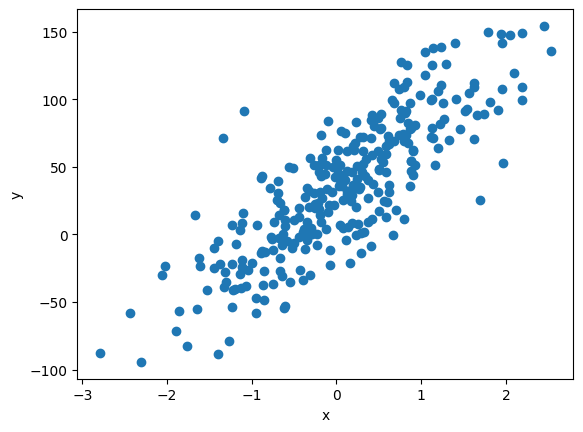
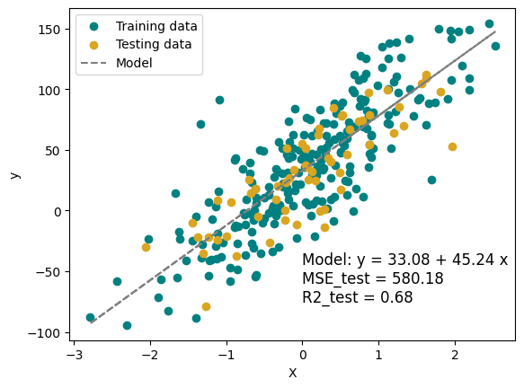

3. Linear Regression (Part 2)#
3.1. Simple Linear Regression (Recap)#
A simple linear model relating a single feature, \(x\), to an outcome \(y\):
This is the equation of a line.
3.1.1. Fitting a linear model#
Goal \(\theta_0\) and \(\theta_1\) are our parameters; they are unknown. We want to find the values of \(\theta_0\) and \(\theta_1\) that best fit our data.
Goodness of Fit
Residual (\(\epsilon_i\)) - the difference between the actual target value \(y_i\) and the model’s prediction \(\hat{y}_i\), \(\epsilon_i = y_i - \hat{y}_i\). We can think of a residual as an error.
Loss function - For any given data point, we penalize error using a loss function. The most common loss function is squared error, \(\epsilon_i^2\).
Cost function - an aggregation of the loss over a set of data, usually the average of the individual losses. We assess the goodness-of-fit of a model using a cost function. The most common cost function is Mean Squared Error (MSE), the average of the squared error of all the data. The lower the cost, the better; lower cost means less error.
Best-fit model - the choice of \(theta\)’s that yield the lowest cost over the training or validation data set.
from sklearn.linear_model import LinearRegression
from sklearn.model_selection import train_test_split
from sklearn.datasets import make_regression
from sklearn.metrics import mean_squared_error
import numpy as np
import matplotlib.pyplot as plt
3.1.1.1. Creating synthetic data#
For a simple linear regression, we create a data set with just one feature and one target.
np.random.seed(1)
bias = 20*np.random.randn()
X, y, coef = make_regression(n_samples=300,
n_features=1, # n_features = 1 --> simple linear regression
noise=30,
bias = bias,
random_state=1,
shuffle = False, # samples will be in order
coef = True)
print(f'\'True\' model:\n y = {bias:.2f} + {coef:.2f} * x')
# plot the data
fig, ax = plt.subplots(1,1)
ax.scatter(X, y)
ax.set_xlabel('x')
ax.set_ylabel('y')
plt.show()
'True' model:
y = 32.49 + 44.19 * x

3.1.1.2. Fitting the model#
In the cell block below, we do the following steps:
Split data into training and testing sets. Typically, we save 20% of the data for training.
Choose a model type and a choice of hyper-parameters. We choose LinearRegression as the model type, using the default hyper-parameters.
Fit the model and calculate MSE and \(R^2\) for our training and testing sets.
# Split the data into training and testing sets, it's typical to save 20% of the data for testing
X_train, X_test, y_train, y_test = train_test_split(X, y, test_size=0.2, random_state=1)
# Create and train the model
model_LR = LinearRegression()
model_LR.fit(X_train, y_train)
# Make predictions
y_pred_train = model_LR.predict(X_train)
y_pred_test = model_LR.predict(X_test)
y_pred = model_LR.predict(X)
# Assess the model
MSE_train = mean_squared_error(y_train, y_pred_train)
R2_train = model_LR.score(X_train, y_train)
MSE_test = mean_squared_error(y_test, y_pred_test)
R2_test = model_LR.score(X_test, y_test)
print(f'model coefficients: {model_LR.coef_[0]}, {model_LR.intercept_}')
print(f'MSE_test = {MSE_test:.2f}, MSE_train = {MSE_train:.2f}')
print(f'R2_test = {R2_test:.2f}, R2_train = {R2_train:.2f}')
model_LR.__dict__
model coefficients: 45.24496021244698, 33.078033584023714
MSE_test = 580.18, MSE_train = 853.64
R2_test = 0.68, R2_train = 0.69
{'fit_intercept': True,
'copy_X': True,
'tol': 1e-06,
'n_jobs': None,
'positive': False,
'n_features_in_': 1,
'coef_': array([45.24496021]),
'rank_': 1,
'singular_': array([14.84030073]),
'intercept_': np.float64(33.078033584023714)}
plt.scatter(X_train, y_train, color='teal', label='Training data')
plt.scatter(X_test, y_test, color='goldenrod', label='Testing data')
plt.plot(X, y_pred, color='gray', linestyle = '--', label='Model')
plt.xlabel('X')
plt.ylabel('y')
plt.text(0, -75, f'Model: y = {model_LR.intercept_:.2f} + {model_LR.coef_[0]:.2f} x \nMSE_test = {MSE_test:.2f}\nR2_test = {R2_test:.2f}', fontsize=12)
plt.legend()
plt.show()

3.1.2. Gradient Descent (A very brief aside)#
In the last class, we just tried a lot of different values for \(\theta_0\) and \(\theta_1\) (we tried about 1000 pairs) and picked the values that gave the lowest MSE. This is a brute force method and as our models get even slightly more complex, this method becomes impractical. So how does Scikit-learn fit models?
Recall that when we plot the MSE versus \(\theta_0\) and \(\theta_1\) we got a bowl shape. The minimum MSE (produced by the best model) is at the bottom of the bowl. Can we find the bottom of the bowl without knowing the entire bowl shape? Yes!
\(\underbrace{\Theta_{new}}_{\text{our new guess}} = \underbrace{\Theta_{old}}_{\text{our old guess}} + \underbrace{\gamma}_{\text{learning rate}} \cdot \underbrace{\nabla J(\Theta)}_{\text{gradient of cost}}\)
Gradient descent - an iterative algorithm for finding a (local) minimum of a function.
Start with a guess, any set of parameters \(\theta\) for your model.
Calculate the gradient of the cost function at that point, say (\(\theta_0\), \(\theta_1\)) for a simple linear regression. The gradient is the derivative (slope) of a function at a point. It is a vector, so it has a magnitude (how steep) and direction (where is it sloping).
Take a step downhill. The step size is determined by the gradient and learning rate.
Keep stepping until \(\theta\) has converged, the change from step to step is small.
Comments
The learning rate contributes to step size.
If learning rate is too low, you’ll take teeny tiny steps and your model might take a long time to fit.
If learning rate is too high, you may step past your minimum.
The nice bowl shape is a convenience of linear regression. Not all regressions will have such a simple shape.
Some models will create cost landscapes with multiple minima. We want to find the global minimum (the lowest low), but gradient descent finds local minima. Solution, run gradient descent several times using different guesses or use a stochastic gradient descent method.
Okay that’s enough about that.
3.2. Multiple Linear Regression#
In Multiple Linear Regression, we predict the target \(y\) using multiple features \(x\).
\(y = \theta_0 + \theta_1 \cdot x_1 + \theta_2 \cdot x_2 + \cdots + \theta_n \cdot x_n + \epsilon\)
The process is very similar to simple linear regression. Let’s make some synthetic data with 2 features and 1 target.
For those with a background in linear algebra, the equation above can be represented in vector form as:
where:
$$ \Theta = \begin{bmatrix} \theta_1\ \theta_2\ \vdots \ \theta_n \end{bmatrix} \text{\qquad and \qquad} X = \begin{bmatrix} x_1\ x_2\ \vdots \ x_n \end{bmatrix}
np.random.seed(1)
bias = 20*np.random.randn()
X, y, coef = make_regression(n_samples=300,
n_features=2, # n_features = 1 --> simple linear regression
noise=30,
bias = bias,
random_state=1,
shuffle = False, # samples will be in order
coef = True)
print(f'\'True\' model:\n y = {bias:.2f} + {coef[0]:.2f} * x_1 + {coef[1]:.2f} * x_2')
# Uncomment the line below for an interactive figure
%matplotlib widget
from mpl_toolkits.mplot3d import Axes3D
fig = plt.figure()
ax = fig.add_subplot(111, projection = '3d')
ax.scatter(X[:,0], X[:,1], y, s=5, alpha = 0.5)
ax.set_xlabel('x_1')
ax.set_ylabel('x_2')
ax.set_zlabel('y')
plt.show()
'True' model:
y = 32.49 + 64.78 * x_1 + 17.98 * x_2
---------------------------------------------------------------------------
RuntimeError Traceback (most recent call last)
File ~/.pyenv/versions/3.13.1/envs/datascience/lib/python3.13/site-packages/matplotlib/backends/registry.py:407, in BackendRegistry.resolve_gui_or_backend(self, gui_or_backend)
406 try:
--> 407 return self.resolve_backend(gui_or_backend)
408 except Exception: # KeyError ?
File ~/.pyenv/versions/3.13.1/envs/datascience/lib/python3.13/site-packages/matplotlib/backends/registry.py:369, in BackendRegistry.resolve_backend(self, backend)
368 if gui is None:
--> 369 raise RuntimeError(f"'{backend}' is not a recognised backend name")
371 return backend, gui if gui != "headless" else None
RuntimeError: 'widget' is not a recognised backend name
During handling of the above exception, another exception occurred:
RuntimeError Traceback (most recent call last)
Cell In[5], line 15
12 print(f'\'True\' model:\n y = {bias:.2f} + {coef[0]:.2f} * x_1 + {coef[1]:.2f} * x_2')
14 # Uncomment the line below for an interactive figure
---> 15 get_ipython().run_line_magic('matplotlib', 'widget')
16 from mpl_toolkits.mplot3d import Axes3D
18 fig = plt.figure()
File ~/.pyenv/versions/3.13.1/envs/datascience/lib/python3.13/site-packages/IPython/core/interactiveshell.py:2504, in InteractiveShell.run_line_magic(self, magic_name, line, _stack_depth)
2502 kwargs['local_ns'] = self.get_local_scope(stack_depth)
2503 with self.builtin_trap:
-> 2504 result = fn(*args, **kwargs)
2506 # The code below prevents the output from being displayed
2507 # when using magics with decorator @output_can_be_silenced
2508 # when the last Python token in the expression is a ';'.
2509 if getattr(fn, magic.MAGIC_OUTPUT_CAN_BE_SILENCED, False):
File ~/.pyenv/versions/3.13.1/envs/datascience/lib/python3.13/site-packages/IPython/core/magics/pylab.py:103, in PylabMagics.matplotlib(self, line)
98 print(
99 "Available matplotlib backends: %s"
100 % _list_matplotlib_backends_and_gui_loops()
101 )
102 else:
--> 103 gui, backend = self.shell.enable_matplotlib(args.gui)
104 self._show_matplotlib_backend(args.gui, backend)
File ~/.pyenv/versions/3.13.1/envs/datascience/lib/python3.13/site-packages/IPython/core/interactiveshell.py:3787, in InteractiveShell.enable_matplotlib(self, gui)
3784 import matplotlib_inline.backend_inline
3786 from IPython.core import pylabtools as pt
-> 3787 gui, backend = pt.find_gui_and_backend(gui, self.pylab_gui_select)
3789 if gui != None:
3790 # If we have our first gui selection, store it
3791 if self.pylab_gui_select is None:
File ~/.pyenv/versions/3.13.1/envs/datascience/lib/python3.13/site-packages/IPython/core/pylabtools.py:349, in find_gui_and_backend(gui, gui_select)
347 else:
348 gui = _convert_gui_to_matplotlib(gui)
--> 349 backend, gui = backend_registry.resolve_gui_or_backend(gui)
351 gui = _convert_gui_from_matplotlib(gui)
352 return gui, backend
File ~/.pyenv/versions/3.13.1/envs/datascience/lib/python3.13/site-packages/matplotlib/backends/registry.py:409, in BackendRegistry.resolve_gui_or_backend(self, gui_or_backend)
407 return self.resolve_backend(gui_or_backend)
408 except Exception: # KeyError ?
--> 409 raise RuntimeError(
410 f"'{gui_or_backend}' is not a recognised GUI loop or backend name")
RuntimeError: 'widget' is not a recognised GUI loop or backend name
# Split the data into training and testing sets
X_train, X_test, y_train, y_test = train_test_split(X, y, test_size=0.2, random_state=1)
# Create and train the model
model_LR = LinearRegression()
model_LR.fit(X_train, y_train)
# Make predictions
y_pred_train = model_LR.predict(X_train)
y_pred_test = model_LR.predict(X_test)
y_pred = model_LR.predict(X)
# Assess the model
MSE_train = mean_squared_error(y_train, y_pred_train)
R2_train = model_LR.score(X_train, y_train)
MSE_test = mean_squared_error(y_test, y_pred_test)
R2_test = model_LR.score(X_test, y_test)
print(f'model coefficients: {model_LR.coef_}, {model_LR.intercept_}')
print(f'MSE_test = {MSE_test:.2f}, MSE_train = {MSE_train:.2f}')
print(f'R2_test = {R2_test:.2f}, R2_train = {R2_train:.2f}')
model_LR.__dict__
print(f'\nBest-fit Model:\n\ty = {model_LR.intercept_:.2f} + {model_LR.coef_[0]:.2f}*x_1 + {model_LR.coef_[1]:.2f}*x_2')
model coefficients: [63.82273891 20.71147598], 31.82452688535094
MSE_test = 747.16, MSE_train = 872.37
R2_test = 0.78, R2_train = 0.83
Best-fit Model:
y = 31.82 + 63.82*x_1 + 20.71*x_2
np.random.seed(1)
bias = 20*np.random.randn()
X1, X2 = np.meshgrid(np.arange(-4,4,0.2), np.arange(-4,4,0.2))
X_grid = np.vstack((X1.flatten(), X2.flatten())).transpose()
y_pred_grid = model_LR.predict(X_grid)
y_pred_grid = y_pred_grid.reshape(X1.shape)
/Users/eatai/.pyenv/versions/datascience/lib/python3.13/site-packages/sklearn/linear_model/_base.py:279: RuntimeWarning: divide by zero encountered in matmul
return X @ coef_ + self.intercept_
/Users/eatai/.pyenv/versions/datascience/lib/python3.13/site-packages/sklearn/linear_model/_base.py:279: RuntimeWarning: overflow encountered in matmul
return X @ coef_ + self.intercept_
/Users/eatai/.pyenv/versions/datascience/lib/python3.13/site-packages/sklearn/linear_model/_base.py:279: RuntimeWarning: invalid value encountered in matmul
return X @ coef_ + self.intercept_
from mpl_toolkits.mplot3d import Axes3D
fig = plt.figure()
ax = fig.add_subplot(111, projection = '3d')
ax.scatter(X[:,0], X[:,1], y, s=5, alpha = 0.5, label = 'Data')
ax.plot_surface(X1, X2, y_pred_grid, color = 'goldenrod', alpha = 0.5, label = 'Model')
ax.set_xlabel('x_1')
ax.set_ylabel('x_2')
ax.set_zlabel('y')
plt.show()
/Users/eatai/.pyenv/versions/datascience/lib/python3.13/site-packages/mpl_toolkits/mplot3d/art3d.py:1403: RuntimeWarning: divide by zero encountered in matmul
shade = ((normals / np.linalg.norm(normals, axis=1, keepdims=True))
/Users/eatai/.pyenv/versions/datascience/lib/python3.13/site-packages/mpl_toolkits/mplot3d/art3d.py:1403: RuntimeWarning: overflow encountered in matmul
shade = ((normals / np.linalg.norm(normals, axis=1, keepdims=True))
3.3. The modeling process#
Exploratory Data Analysis (today)
Clean data (today)
Engineer features (skip for now)
Pre-process data (skip for now)
Split data into training and testing sets. Possibly split training sets into training and validation sets.
Choose a model type and a choice of hyper-parameters.
Fit the model.
Assess the model.
If you’re unsatisfied with the results, go back as many steps as necessary and repeat.
3.3.1. Example: King County Housing#
In this example, we’ll be exploring how the attributes of a home (etc. size, condition, location, etc) contribute to its. Ultimately, we aim to predict sale price from the attributes.
For whom would this model be useful? How so?
3.3.1.1. Exploratory Data Analysis#
What questions might you ask to familiarize yourself with the data?
What are the columns? What do they represent? What are the units?
How big is the sample size?
Types of variables? (numeric, ints, floats)
Relationship the variables have with each other?
Missing data, data quality?
Plots (scatter, hist)
Describe, head, info.
import pandas as pd
import seaborn as sns
housing_df = pd.read_csv('https://raw.githubusercontent.com/GettysburgDataScience/datasets/refs/heads/main/kc_house_data.csv')
housing_df.info()
<class 'pandas.core.frame.DataFrame'>
RangeIndex: 21613 entries, 0 to 21612
Data columns (total 21 columns):
# Column Non-Null Count Dtype
--- ------ -------------- -----
0 id 21613 non-null int64
1 date 21613 non-null object
2 price 21613 non-null float64
3 bedrooms 21613 non-null int64
4 bathrooms 21613 non-null float64
5 sqft_living 21613 non-null int64
6 sqft_lot 21613 non-null int64
7 floors 21613 non-null float64
8 waterfront 21613 non-null int64
9 view 21613 non-null int64
10 condition 21613 non-null int64
11 grade 21613 non-null int64
12 sqft_above 21613 non-null int64
13 sqft_basement 21613 non-null int64
14 yr_built 21613 non-null int64
15 yr_renovated 21613 non-null int64
16 zipcode 21613 non-null int64
17 lat 21613 non-null float64
18 long 21613 non-null float64
19 sqft_living15 21613 non-null int64
20 sqft_lot15 21613 non-null int64
dtypes: float64(5), int64(15), object(1)
memory usage: 3.5+ MB
housing_df.head(20)
| id | date | price | bedrooms | bathrooms | sqft_living | sqft_lot | floors | waterfront | view | ... | grade | sqft_above | sqft_basement | yr_built | yr_renovated | zipcode | lat | long | sqft_living15 | sqft_lot15 | |
|---|---|---|---|---|---|---|---|---|---|---|---|---|---|---|---|---|---|---|---|---|---|
| 0 | 7129300520 | 20141013T000000 | 221900.0 | 3 | 1.00 | 1180 | 5650 | 1.0 | 0 | 0 | ... | 7 | 1180 | 0 | 1955 | 0 | 98178 | 47.5112 | -122.257 | 1340 | 5650 |
| 1 | 6414100192 | 20141209T000000 | 538000.0 | 3 | 2.25 | 2570 | 7242 | 2.0 | 0 | 0 | ... | 7 | 2170 | 400 | 1951 | 1991 | 98125 | 47.7210 | -122.319 | 1690 | 7639 |
| 2 | 5631500400 | 20150225T000000 | 180000.0 | 2 | 1.00 | 770 | 10000 | 1.0 | 0 | 0 | ... | 6 | 770 | 0 | 1933 | 0 | 98028 | 47.7379 | -122.233 | 2720 | 8062 |
| 3 | 2487200875 | 20141209T000000 | 604000.0 | 4 | 3.00 | 1960 | 5000 | 1.0 | 0 | 0 | ... | 7 | 1050 | 910 | 1965 | 0 | 98136 | 47.5208 | -122.393 | 1360 | 5000 |
| 4 | 1954400510 | 20150218T000000 | 510000.0 | 3 | 2.00 | 1680 | 8080 | 1.0 | 0 | 0 | ... | 8 | 1680 | 0 | 1987 | 0 | 98074 | 47.6168 | -122.045 | 1800 | 7503 |
| 5 | 7237550310 | 20140512T000000 | 1225000.0 | 4 | 4.50 | 5420 | 101930 | 1.0 | 0 | 0 | ... | 11 | 3890 | 1530 | 2001 | 0 | 98053 | 47.6561 | -122.005 | 4760 | 101930 |
| 6 | 1321400060 | 20140627T000000 | 257500.0 | 3 | 2.25 | 1715 | 6819 | 2.0 | 0 | 0 | ... | 7 | 1715 | 0 | 1995 | 0 | 98003 | 47.3097 | -122.327 | 2238 | 6819 |
| 7 | 2008000270 | 20150115T000000 | 291850.0 | 3 | 1.50 | 1060 | 9711 | 1.0 | 0 | 0 | ... | 7 | 1060 | 0 | 1963 | 0 | 98198 | 47.4095 | -122.315 | 1650 | 9711 |
| 8 | 2414600126 | 20150415T000000 | 229500.0 | 3 | 1.00 | 1780 | 7470 | 1.0 | 0 | 0 | ... | 7 | 1050 | 730 | 1960 | 0 | 98146 | 47.5123 | -122.337 | 1780 | 8113 |
| 9 | 3793500160 | 20150312T000000 | 323000.0 | 3 | 2.50 | 1890 | 6560 | 2.0 | 0 | 0 | ... | 7 | 1890 | 0 | 2003 | 0 | 98038 | 47.3684 | -122.031 | 2390 | 7570 |
| 10 | 1736800520 | 20150403T000000 | 662500.0 | 3 | 2.50 | 3560 | 9796 | 1.0 | 0 | 0 | ... | 8 | 1860 | 1700 | 1965 | 0 | 98007 | 47.6007 | -122.145 | 2210 | 8925 |
| 11 | 9212900260 | 20140527T000000 | 468000.0 | 2 | 1.00 | 1160 | 6000 | 1.0 | 0 | 0 | ... | 7 | 860 | 300 | 1942 | 0 | 98115 | 47.6900 | -122.292 | 1330 | 6000 |
| 12 | 114101516 | 20140528T000000 | 310000.0 | 3 | 1.00 | 1430 | 19901 | 1.5 | 0 | 0 | ... | 7 | 1430 | 0 | 1927 | 0 | 98028 | 47.7558 | -122.229 | 1780 | 12697 |
| 13 | 6054650070 | 20141007T000000 | 400000.0 | 3 | 1.75 | 1370 | 9680 | 1.0 | 0 | 0 | ... | 7 | 1370 | 0 | 1977 | 0 | 98074 | 47.6127 | -122.045 | 1370 | 10208 |
| 14 | 1175000570 | 20150312T000000 | 530000.0 | 5 | 2.00 | 1810 | 4850 | 1.5 | 0 | 0 | ... | 7 | 1810 | 0 | 1900 | 0 | 98107 | 47.6700 | -122.394 | 1360 | 4850 |
| 15 | 9297300055 | 20150124T000000 | 650000.0 | 4 | 3.00 | 2950 | 5000 | 2.0 | 0 | 3 | ... | 9 | 1980 | 970 | 1979 | 0 | 98126 | 47.5714 | -122.375 | 2140 | 4000 |
| 16 | 1875500060 | 20140731T000000 | 395000.0 | 3 | 2.00 | 1890 | 14040 | 2.0 | 0 | 0 | ... | 7 | 1890 | 0 | 1994 | 0 | 98019 | 47.7277 | -121.962 | 1890 | 14018 |
| 17 | 6865200140 | 20140529T000000 | 485000.0 | 4 | 1.00 | 1600 | 4300 | 1.5 | 0 | 0 | ... | 7 | 1600 | 0 | 1916 | 0 | 98103 | 47.6648 | -122.343 | 1610 | 4300 |
| 18 | 16000397 | 20141205T000000 | 189000.0 | 2 | 1.00 | 1200 | 9850 | 1.0 | 0 | 0 | ... | 7 | 1200 | 0 | 1921 | 0 | 98002 | 47.3089 | -122.210 | 1060 | 5095 |
| 19 | 7983200060 | 20150424T000000 | 230000.0 | 3 | 1.00 | 1250 | 9774 | 1.0 | 0 | 0 | ... | 7 | 1250 | 0 | 1969 | 0 | 98003 | 47.3343 | -122.306 | 1280 | 8850 |
20 rows × 21 columns
housing_df.describe()
| id | price | bedrooms | bathrooms | sqft_living | sqft_lot | floors | waterfront | view | condition | grade | sqft_above | sqft_basement | yr_built | yr_renovated | zipcode | lat | long | sqft_living15 | sqft_lot15 | |
|---|---|---|---|---|---|---|---|---|---|---|---|---|---|---|---|---|---|---|---|---|
| count | 2.161300e+04 | 2.161300e+04 | 21613.000000 | 21613.000000 | 21613.000000 | 2.161300e+04 | 21613.000000 | 21613.000000 | 21613.000000 | 21613.000000 | 21613.000000 | 21613.000000 | 21613.000000 | 21613.000000 | 21613.000000 | 21613.000000 | 21613.000000 | 21613.000000 | 21613.000000 | 21613.000000 |
| mean | 4.580302e+09 | 5.400881e+05 | 3.370842 | 2.114757 | 2079.899736 | 1.510697e+04 | 1.494309 | 0.007542 | 0.234303 | 3.409430 | 7.656873 | 1788.390691 | 291.509045 | 1971.005136 | 84.402258 | 98077.939805 | 47.560053 | -122.213896 | 1986.552492 | 12768.455652 |
| std | 2.876566e+09 | 3.671272e+05 | 0.930062 | 0.770163 | 918.440897 | 4.142051e+04 | 0.539989 | 0.086517 | 0.766318 | 0.650743 | 1.175459 | 828.090978 | 442.575043 | 29.373411 | 401.679240 | 53.505026 | 0.138564 | 0.140828 | 685.391304 | 27304.179631 |
| min | 1.000102e+06 | 7.500000e+04 | 0.000000 | 0.000000 | 290.000000 | 5.200000e+02 | 1.000000 | 0.000000 | 0.000000 | 1.000000 | 1.000000 | 290.000000 | 0.000000 | 1900.000000 | 0.000000 | 98001.000000 | 47.155900 | -122.519000 | 399.000000 | 651.000000 |
| 25% | 2.123049e+09 | 3.219500e+05 | 3.000000 | 1.750000 | 1427.000000 | 5.040000e+03 | 1.000000 | 0.000000 | 0.000000 | 3.000000 | 7.000000 | 1190.000000 | 0.000000 | 1951.000000 | 0.000000 | 98033.000000 | 47.471000 | -122.328000 | 1490.000000 | 5100.000000 |
| 50% | 3.904930e+09 | 4.500000e+05 | 3.000000 | 2.250000 | 1910.000000 | 7.618000e+03 | 1.500000 | 0.000000 | 0.000000 | 3.000000 | 7.000000 | 1560.000000 | 0.000000 | 1975.000000 | 0.000000 | 98065.000000 | 47.571800 | -122.230000 | 1840.000000 | 7620.000000 |
| 75% | 7.308900e+09 | 6.450000e+05 | 4.000000 | 2.500000 | 2550.000000 | 1.068800e+04 | 2.000000 | 0.000000 | 0.000000 | 4.000000 | 8.000000 | 2210.000000 | 560.000000 | 1997.000000 | 0.000000 | 98118.000000 | 47.678000 | -122.125000 | 2360.000000 | 10083.000000 |
| max | 9.900000e+09 | 7.700000e+06 | 33.000000 | 8.000000 | 13540.000000 | 1.651359e+06 | 3.500000 | 1.000000 | 4.000000 | 5.000000 | 13.000000 | 9410.000000 | 4820.000000 | 2015.000000 | 2015.000000 | 98199.000000 | 47.777600 | -121.315000 | 6210.000000 | 871200.000000 |
3.3.2. Selecting features#
When we have many features, we may want to select only a subset of features to use. How would we decide which features to use?
Correlation between two variables conveys the extent of a linear relationship between the two variables. The *correlation coefficient *, \(\rho\), ranges from -1 to 1.
\(\rho = 1\) is a perfect positive correlation. One variable is exactly linearly related to the other with positive slope.
\(\rho = -1\) is a perfect negative correlation. One variable is exactly linearly related to the other with negative slope.
\(\rho = 0\) suggests the two variables are completely uncorrelated.
\(0 < |\rho| < 1\) suggests some correlation. The two variables might be linearly related, but not exactly due to noisy measurements, non-linearities, unconsidered factors, etc. What is considered good correlation varies from domain to domain.
We will want to select features that are correlated to the target value but not correlated to eachother (co-linearity). In the next section, we’ll see how to automate that selection.
Also…Correlation does not imply causation!:
Variables may be correlated to the same thing (e.g. ice cream purchases and heat stroke cases are both correlated to temperature).
Variables could be correlated by chance. See this site of Spurious Correlations
corr = housing_df.corr(numeric_only = True)
import seaborn as sns
fig, ax = plt.subplots(1, 1, figsize = (8, 8))
sns.heatmap(np.abs(corr),
vmin = 0, vmax = 1,
annot = True,
fmt = '.1f',
ax = ax)
plt.show()
Maybe:
sqft living
view
lat
sns.pairplot(housing_df)
plt.show()